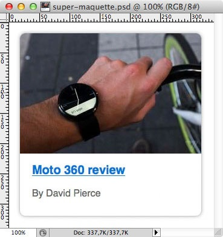

Principes abordés : SEO
Niveau requis : bases de HTML, CSS, JavaScript
Vous recevez de la part de votre chef de projet la maquette ci-dessous, avec la consigne suivante :
Voici la maquette pour le nouvel encart d’article à intégrer sur le site. L'image comme le titre sont des liens, mais pour des raisons de référencement, il ne faudrait pas que l'URL de destination soit visible deux fois dans le code source du document.
Quelles sont les solutions envisageables ?
À l’aide du code HTML+JS suivant, rendez le titre et l'image cliquables vers la page http://www.theverge.com/2014/9/5/6108947/moto-360-review. Comparez les avantages et inconvénients de chaque solution.
<div class="post">
<a class="post-link" href="http://www.theverge.com/2014/9/5/6108947/moto-360-review">
<img class="post-img" alt="Moto 360" src="http://cdn2.vox-cdn.com/uploads/chorus_image/image/38013858/DSCF4522-2040.0.0_standard_300.0.jpg" width="300" height="199" />
</a>
<h1 class="post-title"><a class="post-link" href="http://www.theverge.com/2014/9/5/6108947/moto-360-review">Moto 360 review</a></h1>
<p class="post-author">By David Pierce</p>
</div>
En JavaScript, on peut encoder les liens, par exemple en base64, pour "cacher" l'URL de destination. Ainsi on peut laisser l'URL non-encodée sur un des liens, et l'encoder sur l'autre.
TODO : insérer ici du code.
TODO : ici un commentaire sur l'accessibilité, l'intéropérabilité et le référencement...
En HTML 5 et JavaScript, on peut envisager d'utiliser les Web Components ou plus particulièrement, le Shadow Dom.
TODO : insérer ici une chouette explication sur le Shadow DOM pour expliquer qu'on peut insérer du DOM dans le DOM qui ne soit pas du Light DOM et un point sur le DOM que voit les robots...
TODO : ici un commentaire sur l'accessibilité, l'intéropérabilité et le référencement...
Votre venez de recevoir une nouvelle précision de la part de votre chef de projet :
Il existe déjà du code Legacy qui exécute un certain nombre d'actions quand on clique sur le titre. On voudrait que ces actions soit également exécutées quand on clique sur l'image, mais on ne sait pas quelle méthode appeler.
Quelles solutions se prêtent le mieux à cette modification ?
En JavaScript, il est possible de créer une délégation de clic, c'est-à-dire une solution qui consisterait à dire : au clic sur cette image, nous allons en réalité provoquer un clic sur le titre. Ainsi on s'assure que toutes les actions successives à un clic sur le titre sont conservées.
TODO : insérer ici du code bien sale.
TODO : ici un commentaire négatif sur l'accessibilité